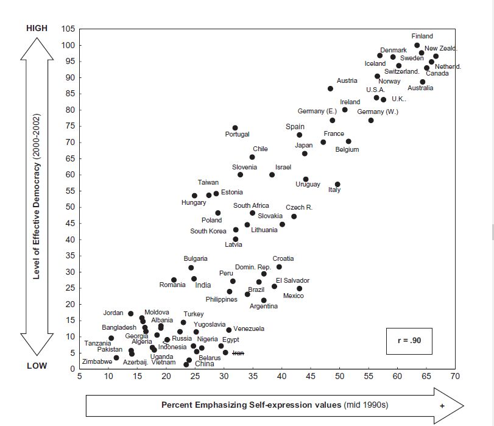
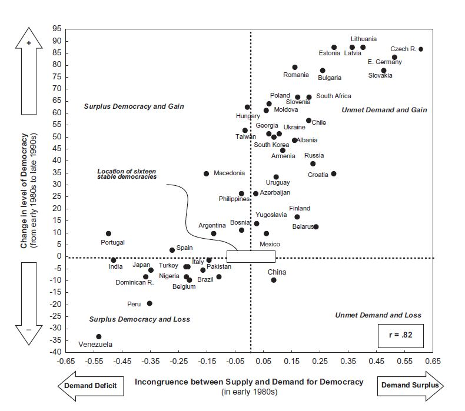

收录于合集
#比较政治学 121 个
#政治文化 8 个
文献来源： Inglehart, Ronald. Cultural evolution: people’s motivations are changing, and reshaping the world. Cambridge University Press, 2018. pp.114-139.
作者简介： 罗纳德·英格尔哈特(Ronald Inglehart)，政治文化研究的先驱与巨擘，世界价值观调查（World Value Survey）创始人，美国密歇根大学政治学荣休教授。英格尔哈特教授笔耕不辍、著作等身，其观点和著述深刻地影响了当代中国政治学界。英格尔哈特教授在近著Cultural Evolution中梳理和整合了自己的重要学术思想，同时回应了当代世界政治变迁中的诸多课题。
一、民主与发展的永恒课题
无论从不同国家间的比较，还是世界历史的发展趋势来看，民主和发展一直存在着相当紧密的联系。事实上，对于这一关系的研究至少可以追溯到马克思的经典著作。他认为，工业化促进了资产阶级的兴起，进而催生了民主。卡尔·多伊奇也认为，城市化、工业化和教育的普及使得民主政治参与成为可能。西摩·马丁·李普塞特则指出，发展首先带来了社会文化的变迁，进而改变了人们的行为，最终促进了民主。
综上所述，大多数学者都认为经济发展促进了政治民主，但支撑这一因果推论的经验证据并不充分。究竟是发展孕育了民主，还是民主带来了发展？阿西莫格鲁等人的研究甚至给出了第三个选项： 民主和发展都是路径依赖的产物，稳定的国家特性比时间中的任何变量都更有解释力。
对于这一问题，作者从文化演化的视角提出了一种综合性的解释。作者认为， 生存的安全程度直接塑造了人类的价值观和行为。当生存安全得不到保障的时候，人们总是倾向于寻求强人领袖的庇护，同时形成对内团结对外仇视的群体。当身份安全得到充分保障的时候，人们就不再完全依赖于领袖和群体，而会更加注重自我表达和自由选择。 作者认为， 个体的自由选择就是民主制度的真谛。 因此，不难理解， 经济发展改善了人们的生存状态，唤醒了人类的自我表达价值观，进而激发了大众对于民主制度的需求。然而，稳定有效的威权制度同样能够提升大众的生存安全，因此自我表达价值观并不以民主制度为前提。
值得注意的是， 价值观的演化是较为缓慢的，因此从发展到民主的因果关系很可能会滞后。 与此同时， 发展和价值观的演化都不是线性的。 很多时候， 经济的挫折和分配上的不平等会重新激发人们对于生存安全的忧虑，进而导致民主的退潮和威权主义的兴起。
二、实证研究中的民主制度
如果要为上述理论寻求经验支撑，那就必须将民主这一概念操作化为可以观测的变量。截至目前，政治学家和国际组织往往将竞争性选举视为民主制度的关键指标，但这种测量方法也招到了很多批评。作者认为， 在腐败横行的国度，竞争性选举并不能迫使精英向大众负责。 类似的， 如果缺乏大众的参与，选举式民主也一定会被精英腐蚀。 因此，作者在此强调， 民主制度区别于威权制度的核心在于给予民众更多的自由选择，而这种选择不能仅限于若干年一次的选举投票。换言之，值得追求的民主应当是有效的。
在此基础上，作者将自由之家对于公民政治权利的评分与世界银行反腐指数相乘，得到了对各个国家“有效民主”的评价。下图直接反应了各国在2000年左右的有效民主情况和其在90年代中期大众自我表达价值观的均值情况。如图所示，自我表达价值观强烈地预示了有效民主的程度。

三、解释民主化浪潮及退潮
上文分析自我表达价值观能够很好地预示各国民主的不同情况。那么自我表达价值观能够解释民主化的浪潮和退潮吗？作者认为， 高度的自我表达价值观和充分的民主制度是合拍的，同样，威权制度也很适应低度的自我表达价值观。 如果价值观和制度发生错位，制度对于民主的供给和价值观对于民主的需求就会出现紧张，那么政治变迁就难以避免。 因此， 民主需求与民主供给的鸿沟越大，发生民主化的可能性就越大。反过来说，如果民主供过于求，那么民主化的退潮也就不难理解。
下图反映了第三波民主化前后各国民主供求和民主变化的关系。如图所示，民主供给不足的国家确实大多变得更加民主，而民主供大于求的国家也大多出现了一定的民主退潮。

当然，这并不意味着民主化是随着价值观变迁而自然发生的，文化演化理论并不拒斥精英的能动性。作者认为， 威权制度实际上是大众和精英的一种均衡状态。然而，随着文化演化的进展，自由选择、自我表达的需求会变得越来越难以遏制。与此同时，技术的发展和知识的传播也提升了大众的参与意愿和参与能力。此时精英也会思考维持威权制度的成本，甚至开始考虑民主选项。
对于当代世界政治中的民主问题，作者认为，确实有很多新兴民主没有成功巩固甚至发生退潮，也有不少成熟民主国家面临着威权主义、民粹主义的威胁。然而纵观人类的发展历史，更好的生存环境和安全情况、更多的自由选择和自我表达一直都是值得追求的发展方向。因此，只要人类的发展还在继续，也许民主会发生相对的退潮，但不会出现绝对的干涸。
注： 特别鸣谢中国人民大学国际关系学院“政治传播与政治心理读书会”，本文对原始文献进行了较大的删改。
编译：陆屹洲
审读：杨端程
编辑：吴温泉


政文观止
微信扫一扫赞赏作者 __赞赏
已喜欢，对作者说句悄悄话
取消 __
发送给作者
发送
最多40字，当前共字
上一页 1/3 下一页
长按二维码向我转账
受苹果公司新规定影响，微信 iOS 版的赞赏功能被关闭，可通过二维码转账支持公众号。